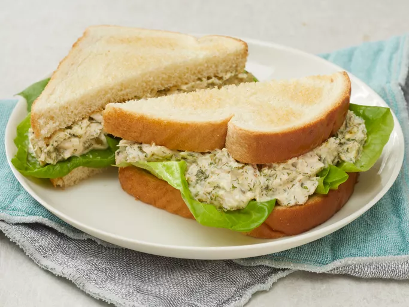

1. Barbie's Tuna Salad Recipe

1.1. Description
The best tuna salad recipe with two secret ingredients:
curry powder and Parmesan cheese!
An odd combination but this
makes a terrific tuna sandwich. I got this recipe from a friend
who used it in her catering service business many years ago.
She used it for an appetizer with gourmet crackers.
It has been my favorite recipe for tuna salad for many, many years.
1.2. Ingredients
- 1 can white tuna, drained and flaked
- 6 tablespoons mayonnaise or salad dressing
- 3 tablespoons sweet pickle relish
- 1 tablespoon Parmesan cheese
- 1/4 teaspoon dried minced onion flakes
- 1 tablespoon dried parsley
- 1 teaspoon dried dill weed
- 1/4 teaspoon curry powder
- 1 pinch garlic powder
1.3. Steps
- Gather all ingredients.
- Combine tuna, mayonnaise, relish, Parmesan cheese, and
onion flakes in a medium bowl.
- Season with parsley, dill, curry powder, and garlic powder.
Mix well!
- Serve with crackers or on a sandwich.